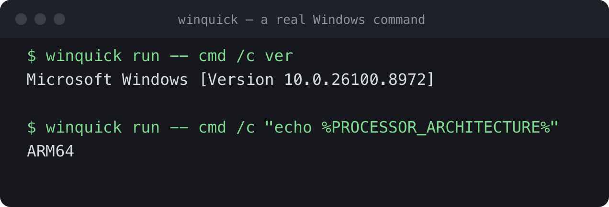
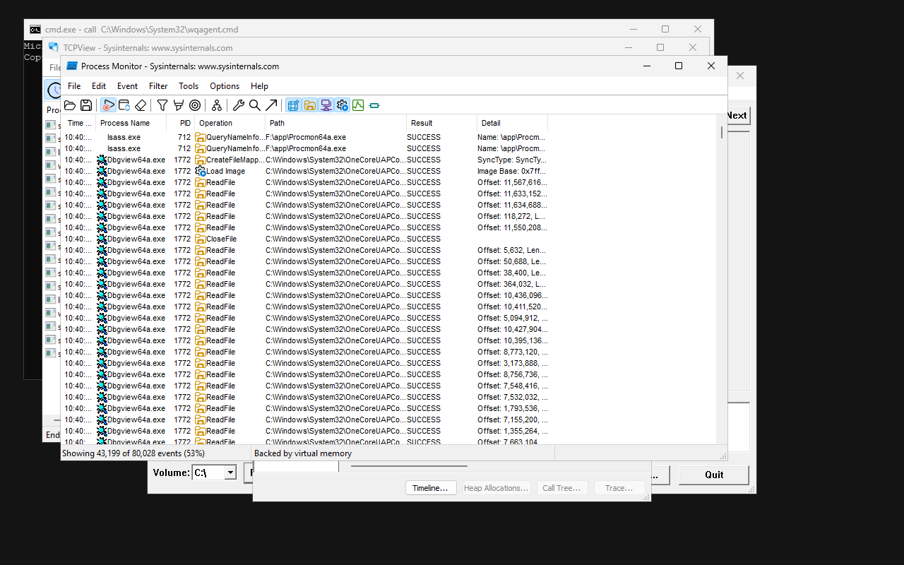
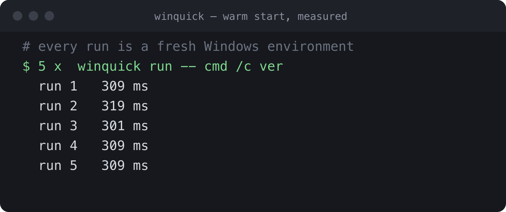
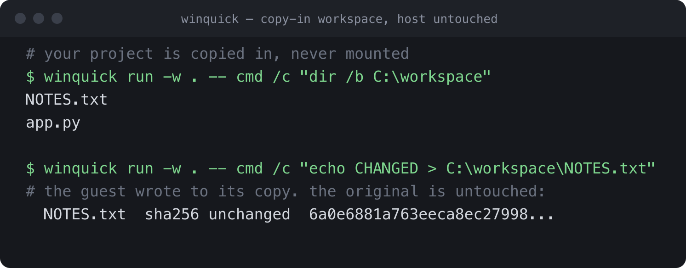
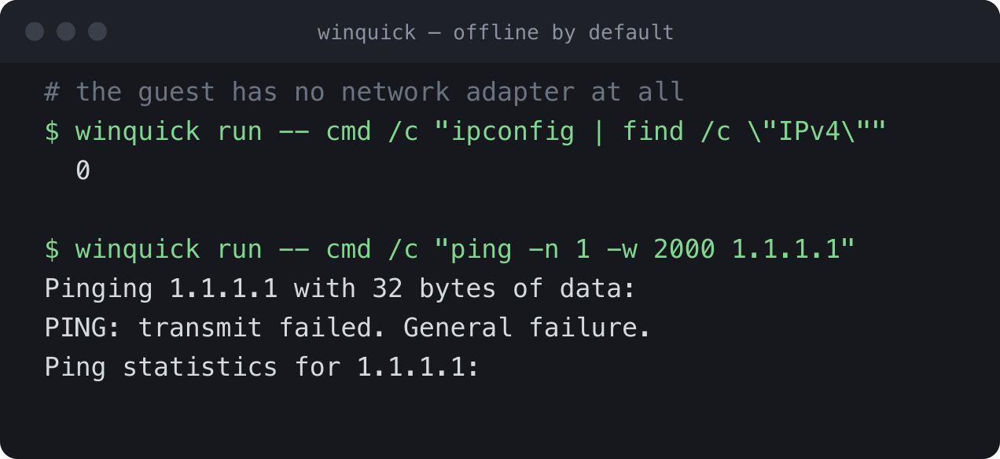
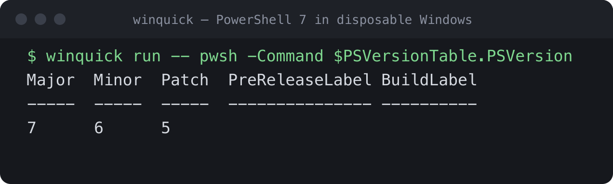
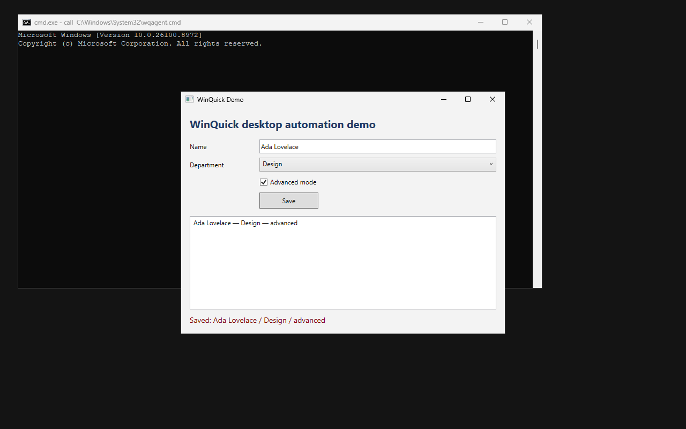

01

Real Windows
Not Wine. Not mocked APIs. Your command executes against a genuine Windows ARM64 kernel with native Windows filesystem, registry, process and API behaviour.
winquick run -- your-command.exe
Run real Windows commands, builds, tests and desktop apps locally. Every run starts clean. No VM to manage. No remote Windows machine. No waiting for a desktop to boot.
Apache-2.0, open sourceruns entirely on your machineno account, no telemetrymacOS, Linux and Windows
WinQuick hides the virtualization layer and gives developers and coding agents a simple primitive: run this inside real Windows and return the result.

Not Wine. Not mocked APIs. Your command executes against a genuine Windows ARM64 kernel with native Windows filesystem, registry, process and API behaviour.
Files, registry changes and environment mutations disappear after every run. The base environment stays pristine.
A prepared Windows state restores in milliseconds. Fast enough to sit inside edit → test → fix loops without feeling like a VM.
Add only what a workload needs: PowerShell, .NET runtime, .NET SDK, desktop support and dependency caches remain modular.
Claude Code, Codex and other agents can use the same CLI humans use. No special VM API and no remote desktop orchestration required.
Console programs run directly — a system tool, a vendor CLI you only have as a Windows binary, or something you built a moment ago — and the exit code that comes back is the program's own, so && and CI logic behave as they would on a Windows box. Programs with a window need the desktop capability; then they run and can be driven, including x64 binaries on the ARM64 guest.
Automated testing of a Windows GUI normally needs a Windows machine with a logged-in desktop. WinQuick builds a WPF or WinForms application, runs it in a real Windows desktop and drives it through Microsoft UI Automation — the interface Windows' own accessibility tools use. Controls are addressed by AutomationId, so a test does not depend on pixel positions or window layout, and a selector matching two elements is an error rather than a guess. Nothing appears on your screen: no QEMU window, no RDP, no VNC.
A session is ready in about 350 ms. Launching an application takes a further ~27 ms and its first window appears about 660 ms later; UI Automation reads and clicks are ~20 ms, and a window screenshot ~59 ms. Preparing the desktop environment is a one-time ~17 seconds.

winquick desktop screenshot app.png
winquick desktop tree --title "WinQuick Demo"
winquick desktop click --automation-id SaveButton
winquick desktop get --automation-id StatusText
Saved: Ada Lovelace / Design / advanced

Captured by scripts/capture-screenshots.sh in the repository. The timings were measured while the image was being made, and the Windows pictures come from the guest's own framebuffer.





WinQuick restores a prepared Windows environment instead of cold-booting a full workstation for every command. The result feels closer to a local tool than a virtual machine.
Current measured Apple Silicon development results. Exact timings vary by machine, command and enabled capabilities.
An agent can often reason about a Windows bug from source. WinQuick lets it verify the fix against real Windows — including WPF and WinForms UI.
WinQuick is a native MCP server, so agents get structured tools rather than shell syntax: build and test on real Windows, launch a WPF or WinForms application, read and drive it through Microsoft UI Automation, and capture real Windows screenshots. Verified with Claude Code.
Apple Silicon macOS is where WinQuick is developed, and where every figure on this page was measured. Linux and Windows run the same CLI on their own native accelerator. A Windows host boots the guest from scratch on every run, which costs about 17 seconds and is deliberate — a resumed guest there stalls on timers. On Linux the host side is verified, in that it builds, the tests pass and the diagnostics are correct, but a guest has not yet been booted on real Linux hardware.
Underneath, yes — QEMU running a real Windows kernel on your platform's own hypervisor. The difference is that you never manage it. There is no VM to create, boot, snapshot, update or clean up, and nothing appears on your screen. A run is a command that returns output and an exit code.
You obtain Microsoft's Validation OS image from Microsoft, under Microsoft's licence, and winquick setup fetches it once you accept those terms. WinQuick ships no Microsoft software itself and never redistributes it.
Your project is copied into the guest and never copied back, so a build cannot modify it, and the guest has no network adapter at all. Anything you want out, you ask for explicitly with --artifact.
It does not boot Windows. Windows is booted once, prepared and frozen; each run restores that saved state into a fresh process, runs your command and discards the copy. Booting from scratch takes about nine seconds, and you pay it once.
Two things. A program with a window needs the desktop capability — the base runtime has no graphics stack, so launching a GUI executable through winquick run fails with a missing-DLL error instead of opening a window.
And the guest is Microsoft's Validation OS, a deliberately minimal Windows, so a tool needing a service it does not ship will not work. Sysinternals' disk2vhd is the clear example: it needs the Volume Shadow Copy service, and vssvc.exe is not on Microsoft's media at all, so there is no package to add. Its console sibling autorunsc, which only reads the registry, works. winquick run -- sc query <name> answers the question for any tool in a second.
On a self-hosted runner with hardware virtualisation, yes — it is an ordinary CLI with real exit codes. Most hosted runners do not expose the virtualisation extensions a guest needs, so it suits your own machines and the local loop before you push.
WinQuick handles the runtime setup and verifies it with a real Windows command before declaring it ready. Homebrew is the quickest route on an Apple Silicon Mac. Archives for Linux and Windows are on the latest release. The builds are not code-signed, but Homebrew fetches the archive itself, so there is no Gatekeeper step.